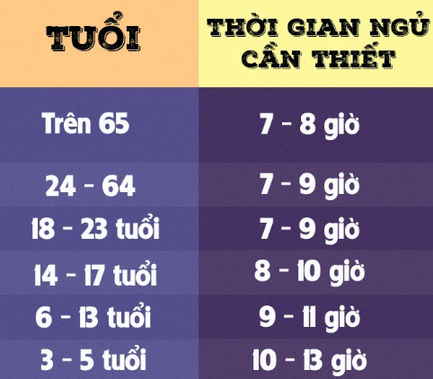

1. Ngủ bao nhiêu lâu là đủ?
Ngủ đủ không chỉ khiến cho chúng ta có cảm giác sảng khoái, tỉnh táo, mà còn ảnh hưởng tích cực đến quá trình học tập và tiếp thu kiến thức* của người trẻ.
Trung bình một người trưởng thành cần ngủ từ 7-8 tiếng mỗi ngày để đạt được trạng thái tinh thần và thể chất tốt nhất.
Trẻ em và thiếu niên thậm chí còn cần thời gian ngủ dài hơn để đảm bảo cho việc phát triển của chúng. Tuy nhiên, cường độ làm việc cao cùng với áp lực phải “đa nhiệm hóa” trong khi thời gian chúng ta chỉ có hạn, dẫn đến việc stress và mất ngủ kéo dài đã khiến không ít gen Z tìm cách để “hack” thời gian ngủ để có thể ngủ ít mà vẫn tỉnh táo, ngủ ít mà vẫn chất lượng. Việc làm này tưởng chừng như có thể tạo ra nhiều khoảng trống thời gian hơn, nhưng trên thực tế, lại không được ủng hộ bởi nhiều chuyên gia và nghiên cứu khoa học. Bạn nên tiết chế việc thức khuya và ngủ thiếu giấc càng nhiều càng tốt, nhưng nếu thực sự cần phải rút ngắn thời gian ngủ, hãy đảm bảo các phương pháp ngủ ít không mệt bạn áp dụng là khoa học.
2. Các phương pháp khoa học để ngủ ít vẫn tỉnh táo
2.1. Ngủ đúng theo chu kỳ giấc ngủ
Giấc ngủ ở người trưởng thành thường kéo dài khoảng 5 - 6 chu kỳ và mỗi chu kỳ kéo dài 90 phút. Một giấc ngủ đủ thường sẽ có 5 giai đoạn như sau
- Ru ngủ: Giai đoạn này là khoảng thời gian chúng ta đang nhắm mắt để dần chìm vào giấc ngủ. Lúc này, mắt lim dim và chúng ta vẫn nhận thức được mọi thứ xung quanh.
- Ngủ nông: Giai đoạn này khá dài, chiếm khoảng 50% thời gian ngủ. Cơ thể lúc này được xem là đi vào giấc ngủ nhưng dễ bị đánh thức bởi tiếng ồn xung quanh.
- Ngủ sâu: Đây là khoảng thời gian ngắn (chiếm khoảng 10% thời gian ngủ) nhưng được xem là rất quan trọng.
- Ngủ rất sâu: Mọi cơ quan trong cơ thể đều được nghỉ ngơi trong thời gian này, khó bị đánh thức bởi tiếng ồn xung quanh.
- Ngủ mơ: Giai đoạn xuất hiện những giấc mơ, mắt có thể chuyển động và dễ bị thức giấc vào giai đoạn này.
Thời gian ngủ tối đa dành cho người trưởng thành là 6 chu kỳ liên tục (tức là khoảng 9 giờ mỗi đêm) và tối thiểu là 3 chu kỳ, khoảng 4,5 giờ. Dựa trên các chu kì và giai đoạn ngủ nói trên, các nhà khoa học khuyên chúng ta muốn ngủ ít mà không mệt mỏi thì nên tính thời gian ngủ và thức dậy lí tưởng như sau:
Thời gian thức = thời gian đi ngủ + (1,5 x X) + Y
Trong đó:
- Thời gian đi ngủ: là giờ chúng ta lên giờ và sẵn sàng đi ngủ
- 1,5: tương đương với 90 phút – một chu kỳ của giấc ngủ
- X: số chu kỳ mong muốn. Số chu kỳ tối thiểu là 3 và chu kỳ tối đa là 6
- Y: là khoảng thời gian ru ngủ. Độ dài này có thể dao động từ 10 – 30 phút tùy theo từng đối tượng.
Ví dụ:
Một người trưởng thành đi ngủ vào 22 giờ đêm, thời gian đi vào giấc ngủ (X) trung bình là 14 phút. Chúng ta sẽ tính thời gian thức tối thiểu của người đó như sau:
Thời gian thức dậy = 22 + (1,5×5) + 14 = 5h44 phút
Chúng ta có thể tính thời gian ngủ và thức dậy lí tưởng sao cho phù hợp với mong muốn của bản thân bằng cách thay đổi số lượng chu kỳ nhưng miễn sao không ít hơn 3 chu kỳ và nhiều hơn 6 chu kỳ để tránh các tác hại ngược gây ra vì thiếu ngủ hoặc ngủ quá nhiều. Phương pháp này giúp chúng ta thức dậy vào giai đoạn chuyển giao giữa các chu kỳ, tránh việc đặt báo thức theo cảm tính vào giữa các chu kỳ hoặc giai đoạn cơ thể đang ngủ sâu gây mệt mỏi và thèm ngủ, thậm chí cáu gắt, làm giảm năng suất làm việc.
Bạn có thể tính thời gian thức dậy lí tưởng thông qua phương pháp chu kỳ giấc ngủ nhanh hơn bằng website: https://sleepyti.me/.
Tìm hiểu thêm: Các ứng dụng công nghệ giúp bạn ngủ ngon hơn
2.2. Phương pháp ngủ Siesta - 6,5 tiếng
Cách ngủ này yêu cầu bạn ngủ 5 giờ đồng hồ mỗi đêm và 1,5 giờ vào ban ngày.
Thủ tướng Anh Quốc Winston Churchill đã từng thực hiện theo cách ngủ này. Ông đi ngủ vào 3h sáng, thức dậy lúc 8h sáng và buổi chiều ông ngủ thêm 1,5 giờ. Đây là phương pháp ngủ ngắn tương tự nhất với cách phân bổ thời gian ngủ hiện đại. Đối với thế hệ gen Z thì đây là phương pháp hiệu quả đáp ứng mong muốn ngủ ít nhưng vẫn đảm bảo sức khỏe thể chất và tinh thần, tối ưu hiệu suất làm việc và thời gian.
còn hình ảnhhhhhhhhhhhhhhhhhh
2.3. Phương pháp ngủ Dymaxion - chỉ 2 tiếng một ngày!
Cha đẻ của phương pháp ngủ này là kiến trúc sư Buckminster Fuller người Hoa Kỳ. Với phương pháp ngủ ngắn này, cứ 6 giờ các bạn sẽ ngủ 1 lần và thời gian ngủ mỗi lần là 30 phút. Một ngày chúng ta sẽ ngủ được 4 lần với tổng thời gian ngủ chỉ 2 giờ đồng hồ.
Tuy nhiên phương pháp này đòi hỏi người áp dụng cần phải tuân thủ nghiêm ngặt về lịch trình thức - ngủ, làm sai lệch hoặc bỏ đi một giờ ngủ dù chỉ một lần cũng khiến bạn bị mất đi nhịp sinh học và khó để bắt đầu lại. Vì thế, phá vỡ nhịp thức - ngủ của phương pháp này cũng gây ra những tác dụng ngược rất tai hại: người sẽ luôn trong tình trạng mệt mỏi, lảo đảo, mất tập trung vì thiếu ngủ cả ngày hôm đó.
Các phương pháp ngủ ít kể trên dù thoạt nghe rất ấn tượng, tuy nhiên mỗi người cần xem xét bản thân phù hợp với phương pháp nào nhất và nhận thức rõ ràng ưu, nhược của phương pháp đó để có những điều chỉnh phù hợp với nhịp sinh hoạt của bản thân.
3. Một số cần lưu ý để giấc ngủ ngắn nhưng vẫn chất lượng
Các phương pháp ngủ ngắn không mệt đa số đều áp dụng để tận dụng khoảng thời gian ngủ sâu hoặc rất sâu, khi con người thực sự “tập trung” ngủ và phục hồi sau khi đã làm việc áp lực. Tuy nhiên, nếu các giấc ngủ ngắn chỉ rơi vào giai đoạn ngủ nông, tức cơ thể chỉ rơi vào trạng thái mơ màng chứ chưa thực sự ngủ thì các phương pháp này sẽ phản tác dụng. Vì thế, khi ngủ càng ít thì các giấc ngủ càng cần phải chất lượng. Dưới đây sẽ là một vài lưu ý để các bạn có thể ngủ ít vẫn tỉnh táo nhờ có những giấc ngủ ngắn chất lượng.
1. Có chế độ ăn uống lành mạnh, dinh dưỡng, đảm bảo đủ năng lượng cho cơ thể
2. Loại bỏ các thiết bị điện tử như điện thoại và tránh ánh đèn quá sáng trong phòng để dễ đi vào giấc ngủ hơn. Cải thiện môi trường phòng ngủ để có thể rút ngắn khoảng thời gian ru ngủ.
3. Hạn chế sử dụng rượu bia và Cafein, nhất là sau 12h trưa.
4. Tránh tập thể dục thể thao quá mạnh trước khi ngủ vì sẽ khiến cơ thể mệt mỏi hơn.
Ngủ đủ như việc “reset” một bộ máy đã làm việc trong thời gian dài. Vì thế, nếu có thể hãy cố gắng ngủ đủ và ngủ đúng theo 5-6 chu kỳ trong ngày. Các phương pháp ngủ ít vẫn khỏe, ngủ ngắn nhưng chất lượng kể trên chỉ mang tính tương đối, không phải ai cũng dễ dàng áp dụng và thích ứng. Hãy cố gắng sắp xếp công việc để có thời gian nghỉ ngơi phù hợp, tránh lạm dụng các phương pháp ngủ ngắn, ngủ dồn, ngủ bù vì về lâu dài sẽ gây suy nhược cơ thể cùng với nhiều các chứng bệnh nguy hiểm khác.